E1 — Marker TPS ve yerel kontur düzeltmesi
Bu sonuçlar otomatik eşleşme göstergesidir; doğrulanmış ground truth veya cevap doğruluğu değildir. Eşleşmeler başlangıç homografisinin 10 px çevresinden seçildiği için büyük sapmalar ve zor balonlar dışarıda kalabilir. Seçim homografiyi kayırabilir. Yöntemler aynı dondurulmuş değerlendirme noktalarında karşılaştırıldı; yerel düzeltmenin eğitildiği satırlar ölçümden çıkarıldı. Aynı fiziksel kağıdın çekimleri bağımsız test örnekleri sayılmaz.
Yeşil halka: otomatik saptanan kontur merkezi. Kırmızı artı: yöntemin tahmini. Üst, orta ve alt bölgelerde üçer yöntem gösterilir. Tüm pikseller 2000 px yüksekliğindeki çalışma uzayındadır. Çap normalizasyonu yaklaşık 22 px kullanır.
Referanstaki 16 merkezin incelemesi · Tüm ölçümler ve koordinatlar
40 görüntüde sonuç
Görüntü başına medyan otomatik eşleşme hatalarının medyanı (px). Bu bir doğruluk yüzdesi değildir.
| Yöntem | turkce | sosyal | matematik | fen |
|---|
| H_all | 1.19 | 1.42 | 1.42 | 1.51 |
| H_ransac | 1.16 | 1.37 | 1.58 | 1.63 |
| TPS_markers | 1.10 | 1.52 | 2.19 | 3.46 |
| H_TPS_all | 1.09 | 1.52 | 1.67 | 1.75 |
| H_TPS_inliers | 1.08 | 1.46 | 1.92 | 1.85 |
| H_local_contours | 0.30 | 0.29 | 0.30 | 0.36 |
Kapsama incelemesi gereken 7 görüntü: dataset/curved_angled/006.png, dataset/curved_angled/008.png, dataset/curved_angled/010.png, dataset/curved_front/006.png, dataset/curved_front/010.png, dataset/flat_angled/009.png, dataset/flat_front/009.png
Sosyal 44-E referans merkezi otomatik olarak doğrulanamadı. Yorumlama sınırları ve sonraki adım · Kapsama ayrıntıları
curved_angled_001
10 marker, 9 inlier. Hücreler: medyan / %95 hata px (değerlendirilen balon sayısı).
| Yöntem | turkce | sosyal | matematik | fen |
|---|
| H_all | 0.50 / 1.91 (160) | 0.78 / 3.50 (173) | 0.95 / 4.20 (159) | 2.60 / 6.38 (154) |
| H_ransac | 0.89 / 1.73 (160) | 1.77 / 2.71 (173) | 2.23 / 3.32 (159) | 1.55 / 2.50 (154) |
| TPS_markers | 0.85 / 1.70 (160) | 1.11 / 2.26 (173) | 0.91 / 3.57 (159) | 2.52 / 6.67 (154) |
| H_TPS_all | 0.82 / 1.48 (160) | 1.13 / 2.74 (173) | 1.50 / 4.28 (159) | 2.71 / 7.22 (154) |
| H_TPS_inliers | 0.99 / 2.30 (160) | 1.74 / 3.15 (173) | 2.35 / 3.84 (159) | 1.91 / 3.07 (154) |
| H_local_contours | 0.31 / 0.70 (160) | 0.34 / 0.72 (173) | 0.30 / 0.66 (159) | 0.33 / 0.70 (154) |
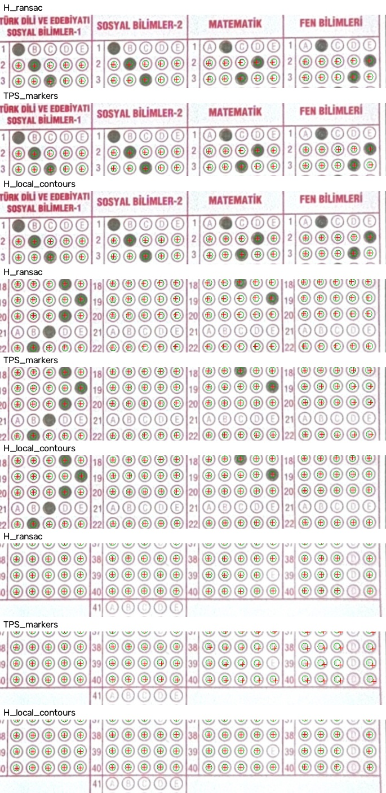
curved_angled_002
10 marker, 9 inlier. Hücreler: medyan / %95 hata px (değerlendirilen balon sayısı).
| Yöntem | turkce | sosyal | matematik | fen |
|---|
| H_all | 3.17 / 5.34 (160) | 3.69 / 6.30 (177) | 5.11 / 6.63 (160) | 6.30 / 7.56 (160) |
| H_ransac | 2.32 / 4.58 (160) | 2.69 / 5.48 (177) | 4.16 / 5.76 (160) | 5.28 / 6.55 (160) |
| TPS_markers | 1.65 / 3.14 (160) | 2.20 / 4.29 (177) | 3.08 / 4.66 (160) | 3.36 / 4.92 (160) |
| H_TPS_all | 1.96 / 4.21 (160) | 2.90 / 5.23 (177) | 4.47 / 5.71 (160) | 5.66 / 6.88 (160) |
| H_TPS_inliers | 2.08 / 4.29 (160) | 3.06 / 5.42 (177) | 4.73 / 5.98 (160) | 6.02 / 7.23 (160) |
| H_local_contours | 0.29 / 1.03 (160) | 0.28 / 0.63 (177) | 0.30 / 0.94 (160) | 0.35 / 0.91 (160) |
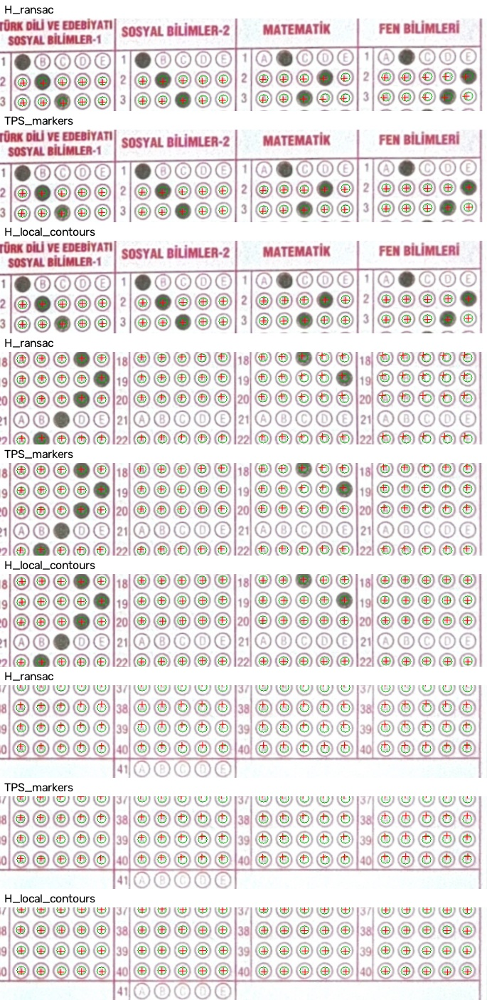
curved_angled_003
10 marker, 8 inlier. Hücreler: medyan / %95 hata px (değerlendirilen balon sayısı).
| Yöntem | turkce | sosyal | matematik | fen |
|---|
| H_all | 1.38 / 2.15 (160) | 1.48 / 2.89 (177) | 1.39 / 2.41 (160) | 1.51 / 2.51 (160) |
| H_ransac | 0.84 / 1.81 (160) | 1.77 / 2.63 (177) | 2.79 / 4.54 (160) | 4.16 / 5.82 (160) |
| TPS_markers | 0.60 / 1.35 (160) | 0.89 / 1.42 (177) | 1.58 / 2.74 (160) | 3.80 / 4.94 (160) |
| H_TPS_all | 0.65 / 1.26 (160) | 0.73 / 2.21 (177) | 0.85 / 2.37 (160) | 1.29 / 3.92 (160) |
| H_TPS_inliers | 0.59 / 1.14 (160) | 1.17 / 1.88 (177) | 2.17 / 3.69 (160) | 3.61 / 4.93 (160) |
| H_local_contours | 0.32 / 0.65 (160) | 0.30 / 0.66 (177) | 0.31 / 0.68 (160) | 0.39 / 0.85 (160) |
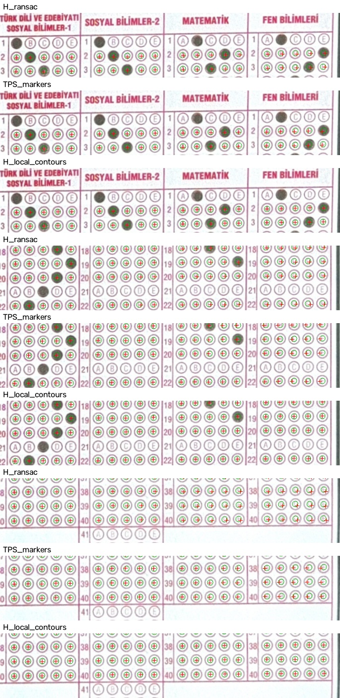
curved_angled_004
10 marker, 9 inlier. Hücreler: medyan / %95 hata px (değerlendirilen balon sayısı).
| Yöntem | turkce | sosyal | matematik | fen |
|---|
| H_all | 1.01 / 2.03 (160) | 1.13 / 2.23 (157) | 1.24 / 2.65 (155) | 1.68 / 4.59 (144) |
| H_ransac | 1.14 / 3.49 (160) | 1.12 / 3.32 (157) | 1.06 / 3.38 (155) | 0.66 / 4.71 (144) |
| TPS_markers | 0.81 / 2.36 (160) | 1.42 / 2.44 (157) | 1.85 / 2.58 (155) | 2.28 / 3.49 (144) |
| H_TPS_all | 0.66 / 1.38 (160) | 1.06 / 1.63 (157) | 1.04 / 2.33 (155) | 0.84 / 4.67 (144) |
| H_TPS_inliers | 0.79 / 3.71 (160) | 0.97 / 3.51 (157) | 1.02 / 3.41 (155) | 0.82 / 4.61 (144) |
| H_local_contours | 0.31 / 0.76 (160) | 0.30 / 0.61 (157) | 0.28 / 0.54 (155) | 0.30 / 0.59 (144) |
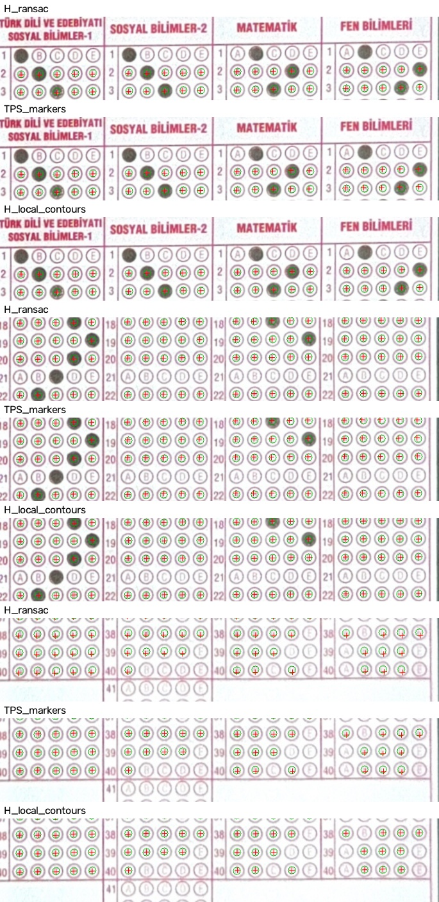
curved_angled_005
10 marker, 9 inlier. Hücreler: medyan / %95 hata px (değerlendirilen balon sayısı).
| Yöntem | turkce | sosyal | matematik | fen |
|---|
| H_all | 0.76 / 1.55 (160) | 0.49 / 1.57 (179) | 0.91 / 2.03 (158) | 1.48 / 2.19 (144) |
| H_ransac | 0.67 / 1.38 (160) | 0.49 / 1.71 (179) | 0.89 / 2.17 (158) | 1.36 / 2.16 (144) |
| TPS_markers | 1.21 / 2.01 (160) | 1.22 / 1.96 (179) | 1.27 / 1.91 (158) | 0.85 / 2.08 (144) |
| H_TPS_all | 0.96 / 1.56 (160) | 1.22 / 2.09 (179) | 1.72 / 2.34 (158) | 1.86 / 2.70 (144) |
| H_TPS_inliers | 0.95 / 1.50 (160) | 1.13 / 2.12 (179) | 1.41 / 2.26 (158) | 1.57 / 2.43 (144) |
| H_local_contours | 0.33 / 0.76 (160) | 0.32 / 0.71 (179) | 0.42 / 0.93 (158) | 0.42 / 0.89 (144) |
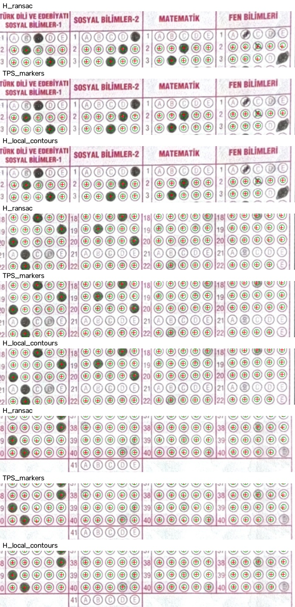
curved_angled_006
10 marker, 9 inlier. Hücreler: medyan / %95 hata px (değerlendirilen balon sayısı).
| Yöntem | turkce | sosyal | matematik | fen |
|---|
| H_all | 1.45 / 2.41 (150) | 1.68 / 2.94 (165) | 1.46 / 3.38 (123) | 0.99 / 3.56 (41) |
| H_ransac | 1.31 / 2.16 (150) | 1.61 / 2.87 (165) | 1.46 / 3.28 (123) | 1.13 / 3.55 (41) |
| TPS_markers | 1.25 / 2.23 (150) | 1.49 / 3.24 (165) | 1.93 / 3.86 (123) | 1.12 / 4.52 (41) |
| H_TPS_all | 1.29 / 2.26 (150) | 1.54 / 3.13 (165) | 1.45 / 3.43 (123) | 1.63 / 3.72 (41) |
| H_TPS_inliers | 1.27 / 2.18 (150) | 1.55 / 3.24 (165) | 1.44 / 3.34 (123) | 1.21 / 3.64 (41) |
| H_local_contours | 0.41 / 1.61 (150) | 0.41 / 0.86 (165) | 0.57 / 1.60 (123) | 1.13 / 3.55 (41) |
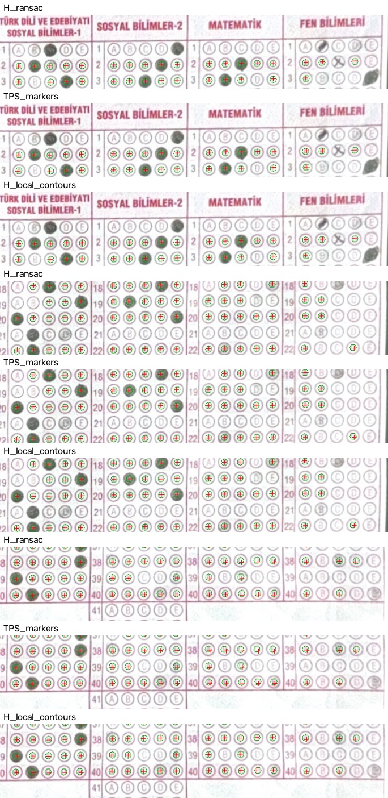
curved_angled_007
10 marker, 9 inlier. Hücreler: medyan / %95 hata px (değerlendirilen balon sayısı).
| Yöntem | turkce | sosyal | matematik | fen |
|---|
| H_all | 0.87 / 1.68 (160) | 0.85 / 1.70 (179) | 1.02 / 1.76 (159) | 0.99 / 1.69 (147) |
| H_ransac | 0.79 / 1.50 (160) | 0.79 / 1.78 (179) | 1.32 / 1.92 (159) | 1.37 / 2.05 (147) |
| TPS_markers | 1.10 / 2.78 (160) | 1.60 / 2.85 (179) | 4.05 / 6.23 (159) | 8.16 / 11.78 (147) |
| H_TPS_all | 1.11 / 3.08 (160) | 1.51 / 2.63 (179) | 2.06 / 3.55 (159) | 2.73 / 3.67 (147) |
| H_TPS_inliers | 1.10 / 2.98 (160) | 1.34 / 2.44 (179) | 1.70 / 2.89 (159) | 1.72 / 2.56 (147) |
| H_local_contours | 0.43 / 1.08 (160) | 0.36 / 0.83 (179) | 0.41 / 0.87 (159) | 0.37 / 0.79 (147) |
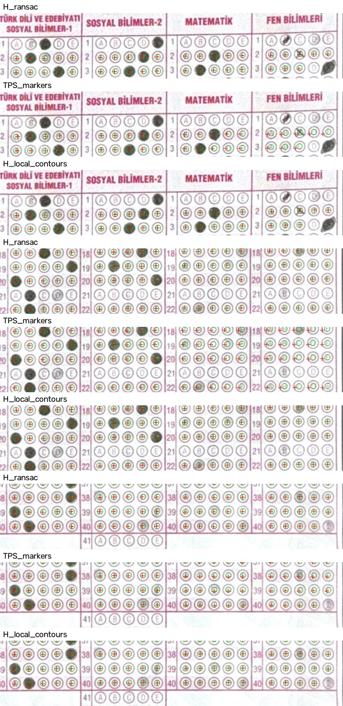
curved_angled_008
10 marker, 6 inlier. Hücreler: medyan / %95 hata px (değerlendirilen balon sayısı).
| Yöntem | turkce | sosyal | matematik | fen |
|---|
| H_all | 6.40 / 12.05 (140) | 7.86 / 13.38 (140) | 10.86 / 13.84 (136) | 13.46 / 15.74 (124) |
| H_ransac | 1.23 / 6.58 (140) | 1.11 / 6.18 (140) | 2.07 / 7.53 (136) | 3.73 / 6.36 (124) |
| TPS_markers | 2.07 / 6.63 (140) | 3.34 / 7.95 (140) | 5.44 / 8.04 (136) | 6.92 / 8.71 (124) |
| H_TPS_all | 2.99 / 10.55 (140) | 5.76 / 12.77 (140) | 9.95 / 13.57 (136) | 13.80 / 16.49 (124) |
| H_TPS_inliers | 1.74 / 6.74 (140) | 1.47 / 5.76 (140) | 2.06 / 6.92 (136) | 3.74 / 5.59 (124) |
| H_local_contours | 0.30 / 1.70 (140) | 0.40 / 1.60 (140) | 0.40 / 1.51 (136) | 0.46 / 3.74 (124) |
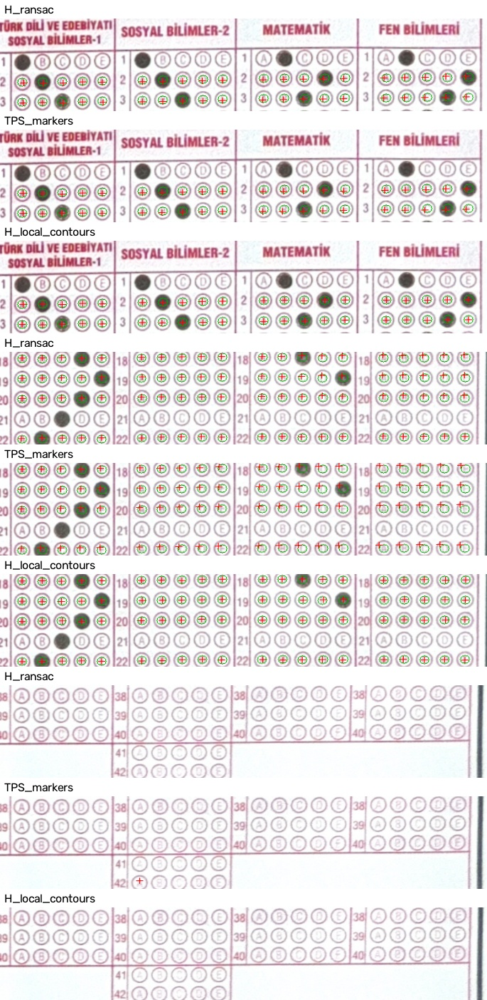
curved_angled_009
10 marker, 8 inlier. Hücreler: medyan / %95 hata px (değerlendirilen balon sayısı).
| Yöntem | turkce | sosyal | matematik | fen |
|---|
| H_all | 3.90 / 7.90 (160) | 4.82 / 8.87 (178) | 6.35 / 9.06 (160) | 7.72 / 9.41 (160) |
| H_ransac | 2.85 / 6.79 (160) | 2.69 / 7.21 (178) | 3.82 / 6.81 (160) | 4.37 / 6.42 (160) |
| TPS_markers | 2.22 / 6.87 (160) | 3.72 / 8.27 (178) | 6.46 / 9.36 (160) | 8.49 / 11.04 (160) |
| H_TPS_all | 1.97 / 5.79 (160) | 3.02 / 6.93 (178) | 5.29 / 7.63 (160) | 6.94 / 8.74 (160) |
| H_TPS_inliers | 1.66 / 5.74 (160) | 2.30 / 6.43 (178) | 3.81 / 6.46 (160) | 4.48 / 6.49 (160) |
| H_local_contours | 0.36 / 1.71 (160) | 0.26 / 0.56 (178) | 0.32 / 1.56 (160) | 0.39 / 1.23 (160) |
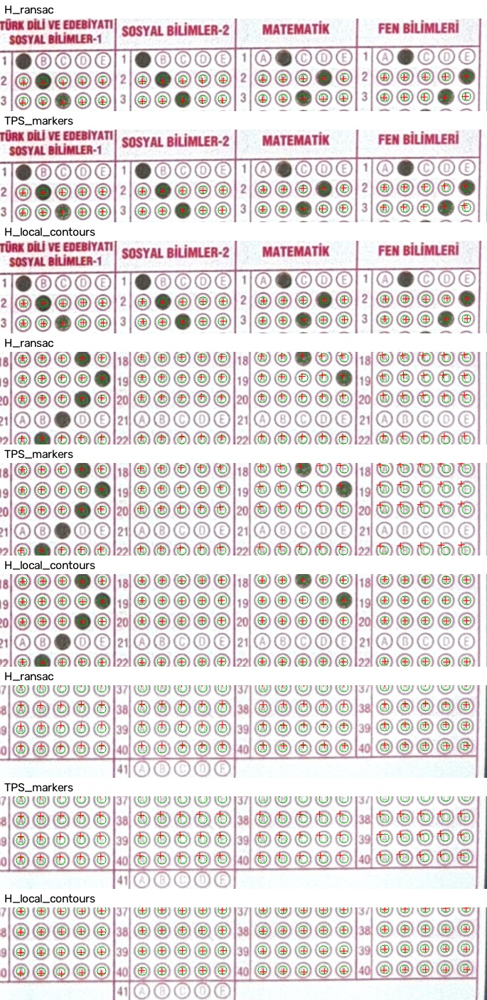
curved_angled_010
10 marker, 8 inlier. Hücreler: medyan / %95 hata px (değerlendirilen balon sayısı).
| Yöntem | turkce | sosyal | matematik | fen |
|---|
| H_all | 1.06 / 2.52 (160) | 1.20 / 4.37 (166) | 1.34 / 3.27 (142) | 2.29 / 3.83 (89) |
| H_ransac | 2.09 / 6.12 (160) | 1.25 / 7.92 (166) | 1.33 / 5.11 (142) | 1.86 / 2.84 (89) |
| TPS_markers | 0.80 / 2.13 (160) | 1.30 / 2.40 (166) | 1.15 / 2.92 (142) | 4.72 / 7.23 (89) |
| H_TPS_all | 0.94 / 2.20 (160) | 1.69 / 3.34 (166) | 1.90 / 3.67 (142) | 1.60 / 3.13 (89) |
| H_TPS_inliers | 0.82 / 5.41 (160) | 1.66 / 7.57 (166) | 2.21 / 4.63 (142) | 1.15 / 3.15 (89) |
| H_local_contours | 0.38 / 1.08 (160) | 0.42 / 1.47 (166) | 0.38 / 0.87 (142) | 0.44 / 0.94 (89) |
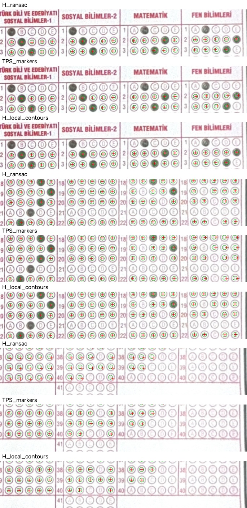
curved_angled_011
10 marker, 8 inlier. Hücreler: medyan / %95 hata px (değerlendirilen balon sayısı).
| Yöntem | turkce | sosyal | matematik | fen |
|---|
| H_all | 2.12 / 3.08 (160) | 2.35 / 3.32 (154) | 2.32 / 3.51 (153) | 2.63 / 3.93 (132) |
| H_ransac | 0.77 / 7.26 (160) | 1.25 / 7.48 (154) | 2.40 / 8.81 (153) | 3.92 / 9.02 (132) |
| TPS_markers | 0.81 / 1.55 (160) | 1.13 / 1.74 (154) | 0.88 / 2.41 (153) | 1.90 / 3.29 (132) |
| H_TPS_all | 0.87 / 2.01 (160) | 1.29 / 2.09 (154) | 1.49 / 2.24 (153) | 1.02 / 2.38 (132) |
| H_TPS_inliers | 0.83 / 6.38 (160) | 1.35 / 6.21 (154) | 2.47 / 7.41 (153) | 3.50 / 7.55 (132) |
| H_local_contours | 0.30 / 1.11 (160) | 0.30 / 0.72 (154) | 0.31 / 2.18 (153) | 0.34 / 0.70 (132) |
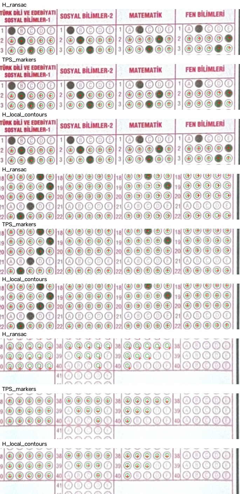
curved_front_001
10 marker, 10 inlier. Hücreler: medyan / %95 hata px (değerlendirilen balon sayısı).
| Yöntem | turkce | sosyal | matematik | fen |
|---|
| H_all | 0.72 / 1.18 (160) | 0.77 / 1.60 (177) | 0.83 / 1.75 (160) | 1.26 / 2.83 (160) |
| H_ransac | 0.83 / 1.32 (160) | 0.97 / 1.67 (177) | 1.14 / 1.87 (160) | 1.64 / 2.95 (160) |
| TPS_markers | 0.50 / 1.02 (160) | 0.54 / 1.66 (177) | 1.21 / 2.50 (160) | 2.56 / 3.84 (160) |
| H_TPS_all | 0.60 / 1.21 (160) | 0.62 / 1.42 (177) | 0.38 / 1.49 (160) | 0.85 / 2.89 (160) |
| H_TPS_inliers | 0.60 / 1.21 (160) | 0.62 / 1.42 (177) | 0.38 / 1.49 (160) | 0.85 / 2.89 (160) |
| H_local_contours | 0.30 / 0.71 (160) | 0.28 / 0.52 (177) | 0.27 / 0.49 (160) | 0.27 / 0.62 (160) |
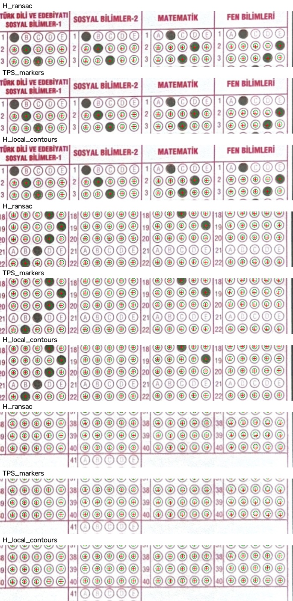
curved_front_002
10 marker, 10 inlier. Hücreler: medyan / %95 hata px (değerlendirilen balon sayısı).
| Yöntem | turkce | sosyal | matematik | fen |
|---|
| H_all | 1.38 / 2.22 (160) | 1.48 / 2.11 (177) | 1.38 / 1.86 (160) | 0.82 / 1.46 (159) |
| H_ransac | 1.29 / 2.08 (160) | 1.36 / 2.17 (177) | 1.37 / 1.98 (160) | 1.09 / 1.79 (159) |
| TPS_markers | 0.81 / 1.39 (160) | 0.97 / 1.44 (177) | 1.15 / 1.58 (160) | 1.35 / 2.04 (159) |
| H_TPS_all | 0.86 / 1.63 (160) | 1.01 / 1.71 (177) | 1.09 / 1.72 (160) | 1.02 / 1.60 (159) |
| H_TPS_inliers | 0.86 / 1.63 (160) | 1.01 / 1.71 (177) | 1.09 / 1.72 (160) | 1.02 / 1.60 (159) |
| H_local_contours | 0.28 / 0.80 (160) | 0.31 / 0.55 (177) | 0.25 / 0.51 (160) | 0.28 / 0.63 (159) |
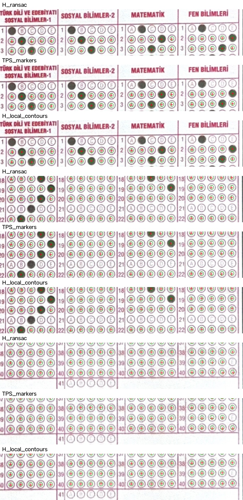
curved_front_003
10 marker, 10 inlier. Hücreler: medyan / %95 hata px (değerlendirilen balon sayısı).
| Yöntem | turkce | sosyal | matematik | fen |
|---|
| H_all | 1.19 / 3.18 (160) | 1.36 / 3.25 (178) | 1.63 / 3.26 (160) | 1.65 / 2.79 (160) |
| H_ransac | 1.17 / 2.96 (160) | 1.40 / 3.00 (178) | 1.58 / 3.00 (160) | 1.63 / 2.59 (160) |
| TPS_markers | 2.20 / 3.95 (160) | 2.24 / 4.54 (178) | 3.15 / 5.08 (160) | 3.52 / 5.26 (160) |
| H_TPS_all | 1.91 / 3.26 (160) | 1.81 / 3.70 (178) | 2.35 / 4.02 (160) | 2.40 / 3.98 (160) |
| H_TPS_inliers | 1.91 / 3.26 (160) | 1.81 / 3.70 (178) | 2.35 / 4.02 (160) | 2.40 / 3.98 (160) |
| H_local_contours | 0.28 / 1.01 (160) | 0.29 / 0.52 (178) | 0.27 / 0.79 (160) | 0.30 / 0.81 (160) |
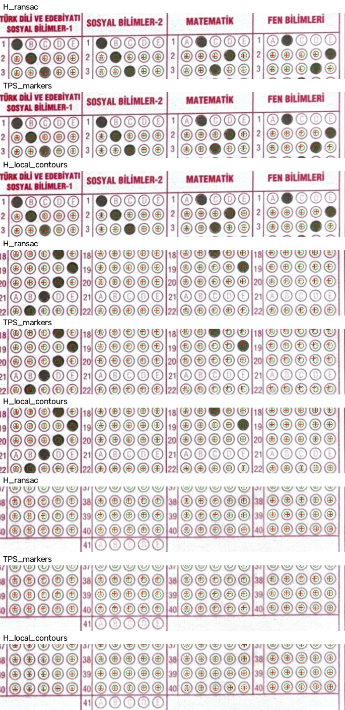
curved_front_004
10 marker, 9 inlier. Hücreler: medyan / %95 hata px (değerlendirilen balon sayısı).
| Yöntem | turkce | sosyal | matematik | fen |
|---|
| H_all | 1.24 / 1.75 (160) | 0.95 / 1.42 (174) | 0.92 / 1.58 (154) | 0.61 / 1.81 (138) |
| H_ransac | 1.26 / 1.78 (160) | 1.04 / 1.48 (174) | 1.17 / 1.85 (154) | 0.88 / 2.09 (138) |
| TPS_markers | 1.85 / 3.01 (160) | 1.99 / 3.35 (174) | 3.54 / 5.14 (154) | 6.55 / 9.13 (138) |
| H_TPS_all | 1.53 / 2.81 (160) | 1.53 / 2.44 (174) | 1.62 / 2.07 (154) | 1.53 / 2.39 (138) |
| H_TPS_inliers | 1.52 / 2.79 (160) | 1.44 / 2.33 (174) | 1.49 / 1.89 (154) | 1.28 / 2.00 (138) |
| H_local_contours | 0.33 / 1.18 (160) | 0.34 / 0.63 (174) | 0.30 / 0.74 (154) | 0.37 / 0.93 (138) |
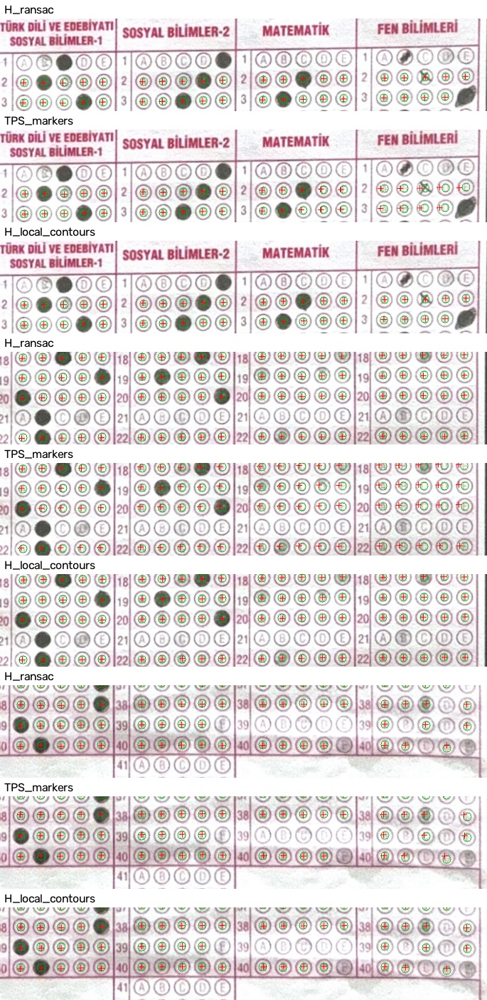
curved_front_005
10 marker, 9 inlier. Hücreler: medyan / %95 hata px (değerlendirilen balon sayısı).
| Yöntem | turkce | sosyal | matematik | fen |
|---|
| H_all | 1.20 / 1.68 (160) | 1.10 / 1.64 (170) | 1.13 / 1.77 (153) | 1.31 / 2.55 (134) |
| H_ransac | 1.20 / 1.65 (160) | 1.11 / 1.69 (170) | 1.20 / 1.89 (153) | 1.35 / 2.37 (134) |
| TPS_markers | 2.12 / 3.69 (160) | 2.75 / 4.07 (170) | 3.70 / 4.53 (153) | 4.68 / 5.98 (134) |
| H_TPS_all | 1.80 / 3.04 (160) | 2.06 / 3.09 (170) | 2.45 / 3.04 (153) | 2.79 / 3.93 (134) |
| H_TPS_inliers | 1.73 / 2.99 (160) | 1.96 / 2.96 (170) | 2.19 / 2.84 (153) | 2.32 / 3.56 (134) |
| H_local_contours | 0.33 / 1.35 (160) | 0.32 / 0.67 (170) | 0.35 / 0.74 (153) | 0.42 / 0.99 (134) |
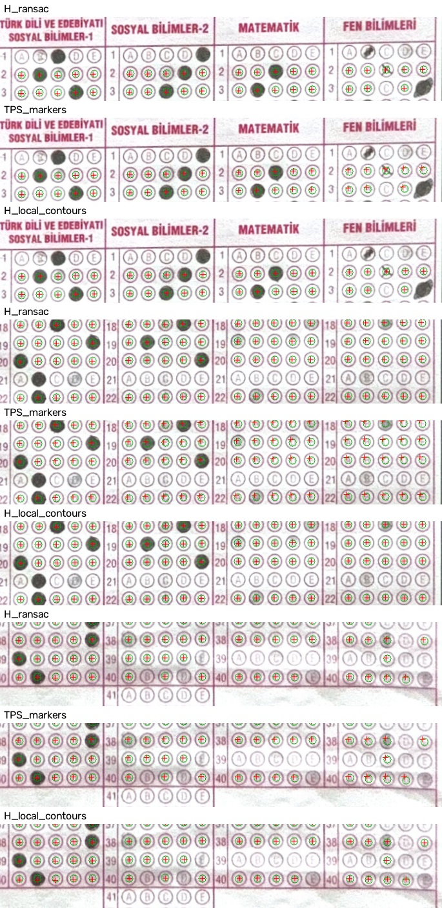
curved_front_006
10 marker, 8 inlier. Hücreler: medyan / %95 hata px (değerlendirilen balon sayısı).
| Yöntem | turkce | sosyal | matematik | fen |
|---|
| H_all | 0.80 / 1.36 (97) | 1.06 / 1.79 (14) | 1.59 / 2.29 (17) | 3.28 / 4.00 (10) |
| H_ransac | 0.44 / 0.82 (97) | 0.80 / 1.58 (14) | 1.22 / 1.58 (17) | 1.23 / 1.73 (10) |
| TPS_markers | 0.48 / 0.96 (97) | 0.43 / 1.04 (14) | 0.90 / 1.64 (17) | 2.49 / 3.59 (10) |
| H_TPS_all | 0.55 / 1.15 (97) | 0.92 / 1.77 (14) | 2.01 / 2.98 (17) | 3.87 / 4.44 (10) |
| H_TPS_inliers | 0.36 / 0.77 (97) | 0.68 / 1.30 (14) | 0.98 / 1.44 (17) | 1.16 / 1.42 (10) |
| H_local_contours | 0.28 / 0.62 (97) | 0.80 / 1.58 (14) | 1.22 / 1.58 (17) | 1.23 / 1.73 (10) |
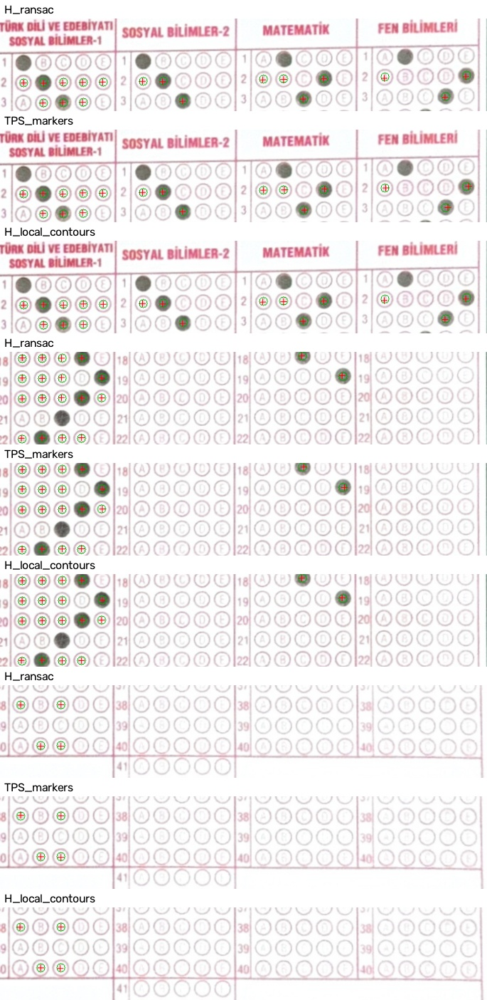
curved_front_007
10 marker, 9 inlier. Hücreler: medyan / %95 hata px (değerlendirilen balon sayısı).
| Yöntem | turkce | sosyal | matematik | fen |
|---|
| H_all | 1.46 / 2.27 (160) | 1.56 / 2.26 (178) | 1.50 / 2.04 (160) | 0.97 / 1.71 (160) |
| H_ransac | 1.05 / 2.89 (160) | 1.38 / 3.39 (178) | 2.05 / 3.52 (160) | 2.34 / 3.43 (160) |
| TPS_markers | 1.24 / 3.24 (160) | 1.69 / 3.33 (178) | 2.51 / 3.69 (160) | 3.65 / 4.64 (160) |
| H_TPS_all | 1.07 / 2.49 (160) | 1.24 / 2.74 (178) | 1.58 / 2.74 (160) | 1.54 / 2.45 (160) |
| H_TPS_inliers | 1.05 / 2.76 (160) | 1.44 / 3.49 (178) | 2.28 / 3.74 (160) | 2.53 / 3.69 (160) |
| H_local_contours | 0.30 / 0.93 (160) | 0.29 / 0.57 (178) | 0.27 / 0.58 (160) | 0.30 / 0.62 (160) |
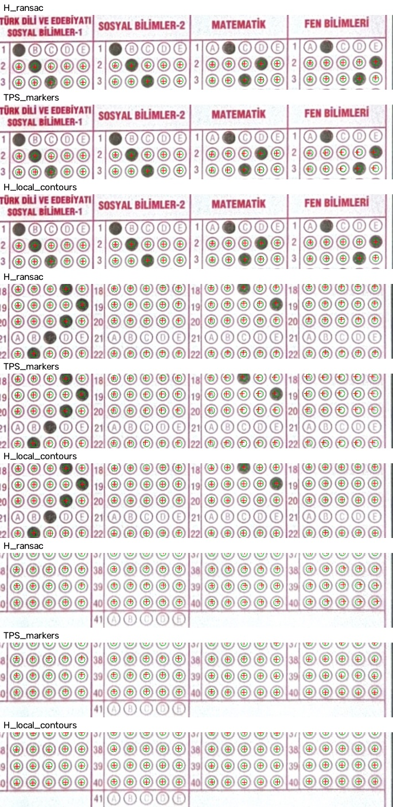
curved_front_008
10 marker, 10 inlier. Hücreler: medyan / %95 hata px (değerlendirilen balon sayısı).
| Yöntem | turkce | sosyal | matematik | fen |
|---|
| H_all | 1.23 / 2.46 (160) | 1.44 / 2.88 (178) | 1.58 / 2.93 (160) | 1.46 / 2.62 (160) |
| H_ransac | 1.23 / 2.46 (160) | 1.44 / 2.88 (178) | 1.58 / 2.93 (160) | 1.46 / 2.62 (160) |
| TPS_markers | 0.99 / 2.91 (160) | 1.64 / 3.38 (178) | 2.55 / 3.78 (160) | 3.52 / 4.44 (160) |
| H_TPS_all | 0.95 / 2.71 (160) | 1.45 / 3.29 (178) | 2.12 / 3.63 (160) | 2.07 / 3.42 (160) |
| H_TPS_inliers | 0.95 / 2.71 (160) | 1.45 / 3.29 (178) | 2.12 / 3.63 (160) | 2.07 / 3.42 (160) |
| H_local_contours | 0.28 / 0.80 (160) | 0.29 / 0.56 (178) | 0.29 / 0.64 (160) | 0.31 / 0.67 (160) |
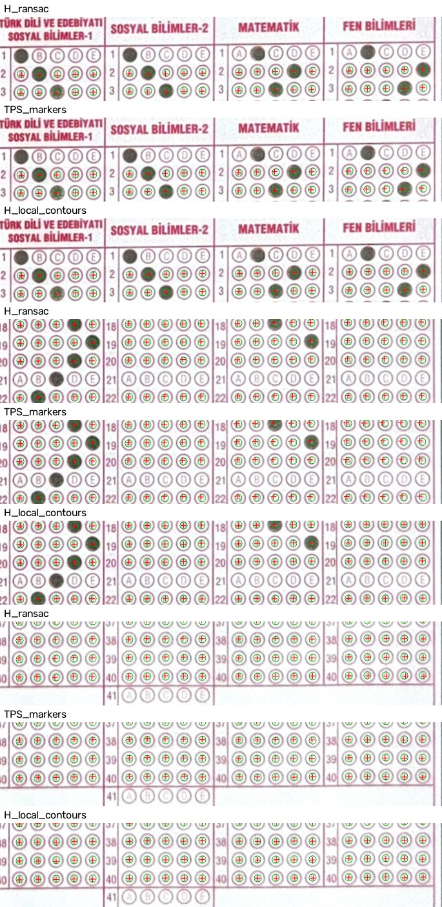
curved_front_009
10 marker, 9 inlier. Hücreler: medyan / %95 hata px (değerlendirilen balon sayısı).
| Yöntem | turkce | sosyal | matematik | fen |
|---|
| H_all | 1.19 / 3.93 (160) | 1.82 / 3.02 (168) | 2.72 / 3.62 (154) | 4.10 / 5.68 (140) |
| H_ransac | 0.97 / 3.70 (160) | 1.76 / 2.89 (168) | 2.74 / 3.69 (154) | 4.26 / 5.89 (140) |
| TPS_markers | 1.98 / 3.84 (160) | 2.80 / 3.97 (168) | 4.04 / 5.28 (154) | 5.83 / 7.78 (140) |
| H_TPS_all | 1.95 / 3.73 (160) | 2.75 / 3.88 (168) | 3.84 / 5.03 (154) | 5.44 / 7.25 (140) |
| H_TPS_inliers | 1.89 / 3.73 (160) | 2.63 / 3.77 (168) | 3.56 / 4.72 (154) | 4.97 / 6.78 (140) |
| H_local_contours | 0.33 / 2.01 (160) | 0.31 / 0.64 (168) | 0.30 / 0.71 (154) | 0.41 / 0.82 (140) |
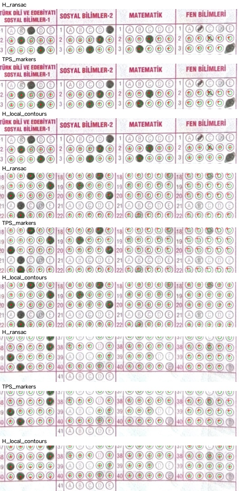
curved_front_010
10 marker, 8 inlier. Hücreler: medyan / %95 hata px (değerlendirilen balon sayısı).
| Yöntem | turkce | sosyal | matematik | fen |
|---|
| H_all | 1.63 / 4.81 (154) | 2.29 / 3.76 (154) | 3.38 / 4.44 (145) | 4.60 / 6.65 (101) |
| H_ransac | 1.30 / 4.39 (154) | 2.08 / 3.43 (154) | 3.19 / 4.28 (145) | 4.61 / 6.63 (101) |
| TPS_markers | 1.79 / 3.38 (154) | 2.35 / 3.40 (154) | 3.40 / 4.36 (145) | 4.71 / 6.77 (101) |
| H_TPS_all | 2.05 / 4.26 (154) | 2.93 / 4.22 (154) | 4.14 / 5.37 (145) | 5.60 / 7.86 (101) |
| H_TPS_inliers | 2.06 / 4.28 (154) | 2.81 / 4.15 (154) | 3.94 / 5.12 (145) | 5.24 / 7.48 (101) |
| H_local_contours | 0.34 / 2.13 (154) | 0.32 / 0.75 (154) | 0.33 / 0.91 (145) | 0.39 / 0.93 (101) |
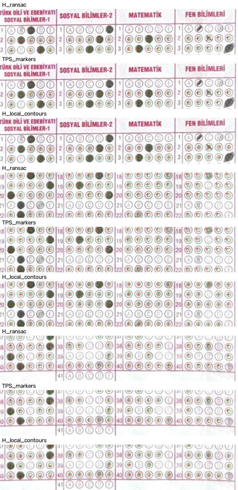
flat_angled_001
10 marker, 10 inlier. Hücreler: medyan / %95 hata px (değerlendirilen balon sayısı).
| Yöntem | turkce | sosyal | matematik | fen |
|---|
| H_all | 0.75 / 1.20 (160) | 0.62 / 1.02 (178) | 0.44 / 0.89 (160) | 0.63 / 1.35 (159) |
| H_ransac | 0.75 / 1.20 (160) | 0.62 / 1.02 (178) | 0.44 / 0.89 (160) | 0.63 / 1.35 (159) |
| TPS_markers | 0.70 / 1.25 (160) | 0.84 / 1.39 (178) | 1.32 / 1.91 (160) | 1.85 / 2.58 (159) |
| H_TPS_all | 0.74 / 1.37 (160) | 0.79 / 1.39 (178) | 0.80 / 1.44 (160) | 0.70 / 1.24 (159) |
| H_TPS_inliers | 0.74 / 1.37 (160) | 0.79 / 1.39 (178) | 0.80 / 1.44 (160) | 0.70 / 1.24 (159) |
| H_local_contours | 0.25 / 0.54 (160) | 0.28 / 0.55 (178) | 0.27 / 0.52 (160) | 0.29 / 0.65 (159) |
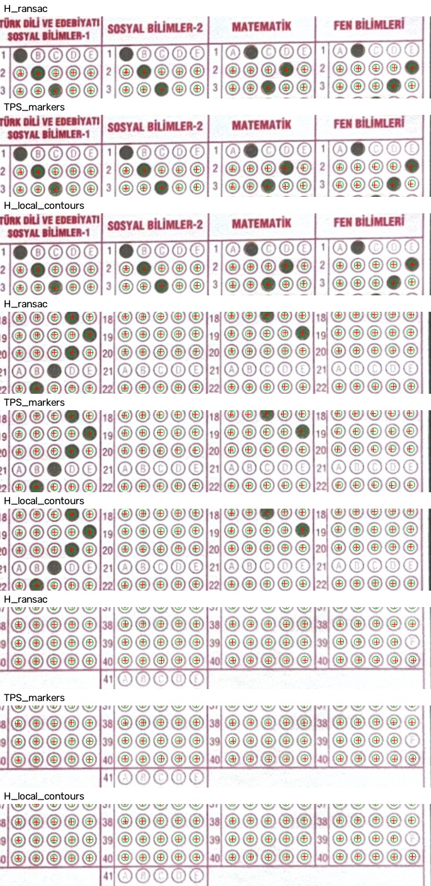
flat_angled_002
9 marker, 8 inlier. Hücreler: medyan / %95 hata px (değerlendirilen balon sayısı).
| Yöntem | turkce | sosyal | matematik | fen |
|---|
| H_all | 0.84 / 1.47 (160) | 1.27 / 1.82 (178) | 1.29 / 1.79 (160) | 1.42 / 2.01 (160) |
| H_ransac | 1.52 / 2.70 (160) | 1.75 / 3.07 (178) | 1.60 / 2.28 (160) | 1.40 / 2.28 (160) |
| TPS_markers | 1.26 / 1.84 (160) | 1.57 / 2.02 (178) | 2.18 / 3.35 (160) | 4.01 / 5.43 (160) |
| H_TPS_all | 0.97 / 1.47 (160) | 1.33 / 1.72 (178) | 1.46 / 2.00 (160) | 1.71 / 2.46 (160) |
| H_TPS_inliers | 1.33 / 2.26 (160) | 1.67 / 2.75 (178) | 1.45 / 2.15 (160) | 1.35 / 2.34 (160) |
| H_local_contours | 0.28 / 0.59 (160) | 0.28 / 0.50 (178) | 0.28 / 0.60 (160) | 0.33 / 0.68 (160) |
flat_angled_003
10 marker, 9 inlier. Hücreler: medyan / %95 hata px (değerlendirilen balon sayısı).
| Yöntem | turkce | sosyal | matematik | fen |
|---|
| H_all | 2.69 / 4.32 (160) | 3.27 / 5.12 (176) | 4.09 / 5.10 (160) | 4.85 / 5.81 (160) |
| H_ransac | 3.38 / 6.30 (160) | 4.25 / 6.63 (176) | 4.25 / 5.72 (160) | 4.46 / 5.49 (160) |
| TPS_markers | 2.14 / 3.39 (160) | 2.97 / 4.09 (176) | 3.77 / 4.87 (160) | 4.87 / 6.04 (160) |
| H_TPS_all | 2.27 / 3.66 (160) | 3.25 / 4.57 (176) | 4.29 / 5.02 (160) | 5.07 / 5.94 (160) |
| H_TPS_inliers | 3.14 / 5.67 (160) | 4.15 / 6.11 (176) | 4.17 / 5.37 (160) | 4.29 / 5.29 (160) |
| H_local_contours | 0.28 / 0.97 (160) | 0.25 / 0.55 (176) | 0.31 / 0.69 (160) | 0.40 / 0.84 (160) |
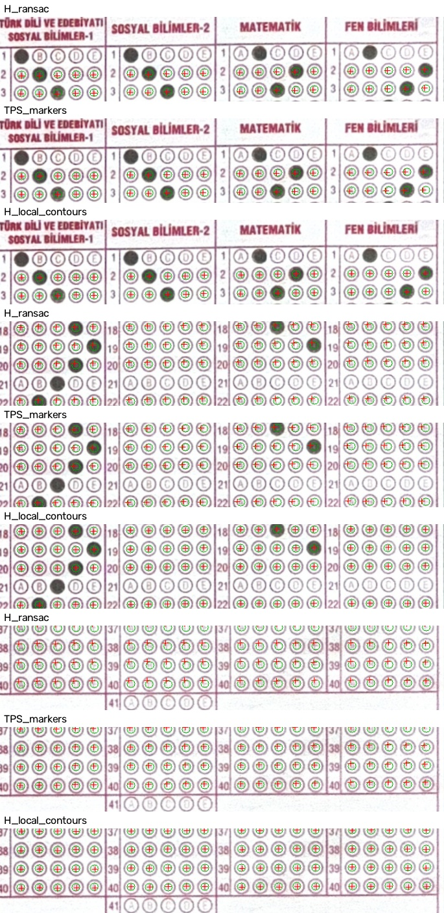
flat_angled_004
10 marker, 10 inlier. Hücreler: medyan / %95 hata px (değerlendirilen balon sayısı).
| Yöntem | turkce | sosyal | matematik | fen |
|---|
| H_all | 1.79 / 2.38 (160) | 1.63 / 2.39 (171) | 1.20 / 1.92 (160) | 1.15 / 2.34 (141) |
| H_ransac | 2.00 / 2.67 (160) | 1.88 / 2.71 (171) | 1.55 / 2.21 (160) | 1.44 / 2.72 (141) |
| TPS_markers | 1.56 / 3.28 (160) | 1.28 / 2.46 (171) | 1.61 / 2.47 (160) | 2.87 / 4.23 (141) |
| H_TPS_all | 1.51 / 3.25 (160) | 1.60 / 3.02 (171) | 1.93 / 3.40 (160) | 1.79 / 2.80 (141) |
| H_TPS_inliers | 1.51 / 3.25 (160) | 1.60 / 3.02 (171) | 1.93 / 3.40 (160) | 1.79 / 2.80 (141) |
| H_local_contours | 0.29 / 0.75 (160) | 0.29 / 0.58 (171) | 0.30 / 0.62 (160) | 0.48 / 0.86 (141) |
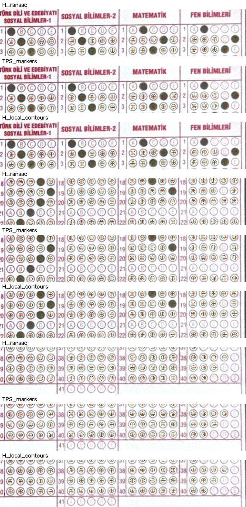
flat_angled_005
10 marker, 9 inlier. Hücreler: medyan / %95 hata px (değerlendirilen balon sayısı).
| Yöntem | turkce | sosyal | matematik | fen |
|---|
| H_all | 1.28 / 2.40 (160) | 1.95 / 3.00 (176) | 2.03 / 2.73 (160) | 2.41 / 3.10 (160) |
| H_ransac | 2.17 / 4.42 (160) | 2.50 / 4.93 (176) | 2.18 / 3.71 (160) | 2.12 / 3.40 (160) |
| TPS_markers | 1.36 / 2.27 (160) | 2.03 / 2.62 (176) | 2.90 / 4.42 (160) | 5.58 / 7.53 (160) |
| H_TPS_all | 1.21 / 2.16 (160) | 1.98 / 2.81 (176) | 2.38 / 3.09 (160) | 2.88 / 3.80 (160) |
| H_TPS_inliers | 1.94 / 4.27 (160) | 2.32 / 4.90 (176) | 2.09 / 3.70 (160) | 2.06 / 3.43 (160) |
| H_local_contours | 0.30 / 0.62 (160) | 0.28 / 0.55 (176) | 0.28 / 0.64 (160) | 0.40 / 0.76 (160) |
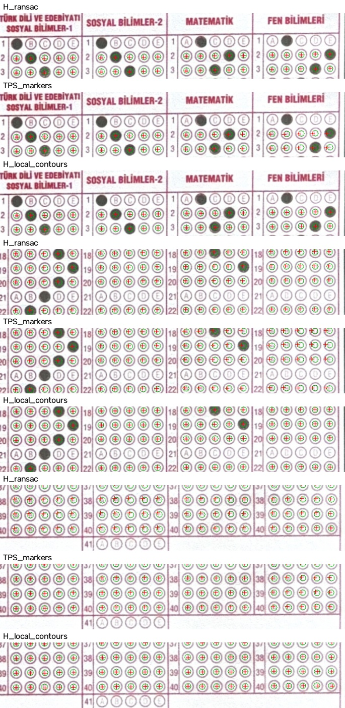
flat_angled_006
10 marker, 9 inlier. Hücreler: medyan / %95 hata px (değerlendirilen balon sayısı).
| Yöntem | turkce | sosyal | matematik | fen |
|---|
| H_all | 3.44 / 6.23 (160) | 4.57 / 7.93 (171) | 6.45 / 8.28 (159) | 8.03 / 9.56 (148) |
| H_ransac | 3.99 / 7.27 (160) | 5.23 / 8.64 (171) | 6.71 / 8.71 (159) | 8.02 / 9.41 (148) |
| TPS_markers | 0.84 / 1.50 (160) | 1.63 / 2.78 (171) | 2.41 / 3.11 (159) | 3.41 / 4.16 (148) |
| H_TPS_all | 1.96 / 4.48 (160) | 3.44 / 6.48 (171) | 5.53 / 7.08 (159) | 7.38 / 8.83 (148) |
| H_TPS_inliers | 1.97 / 5.04 (160) | 3.72 / 6.86 (171) | 5.28 / 7.22 (159) | 7.13 / 8.66 (148) |
| H_local_contours | 0.30 / 1.45 (160) | 0.30 / 0.61 (171) | 0.39 / 1.14 (159) | 0.47 / 1.22 (148) |
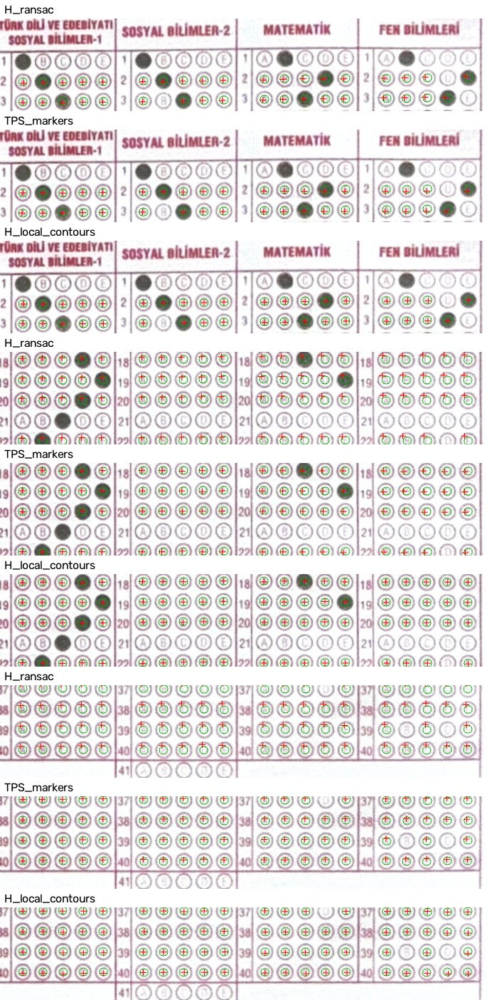
flat_angled_007
10 marker, 9 inlier. Hücreler: medyan / %95 hata px (değerlendirilen balon sayısı).
| Yöntem | turkce | sosyal | matematik | fen |
|---|
| H_all | 3.29 / 5.83 (160) | 4.71 / 8.01 (170) | 6.59 / 8.50 (160) | 8.62 / 10.12 (145) |
| H_ransac | 2.87 / 5.53 (160) | 4.17 / 7.67 (170) | 5.98 / 8.08 (160) | 8.10 / 9.67 (145) |
| TPS_markers | 0.97 / 2.33 (160) | 1.50 / 2.29 (170) | 2.05 / 3.00 (160) | 2.52 / 3.72 (145) |
| H_TPS_all | 1.69 / 4.30 (160) | 3.41 / 6.59 (170) | 5.46 / 7.35 (160) | 7.84 / 9.42 (145) |
| H_TPS_inliers | 1.72 / 4.33 (160) | 3.47 / 6.64 (170) | 5.59 / 7.45 (160) | 7.91 / 9.49 (145) |
| H_local_contours | 0.34 / 1.33 (160) | 0.35 / 1.02 (170) | 0.45 / 1.46 (160) | 0.58 / 1.34 (145) |
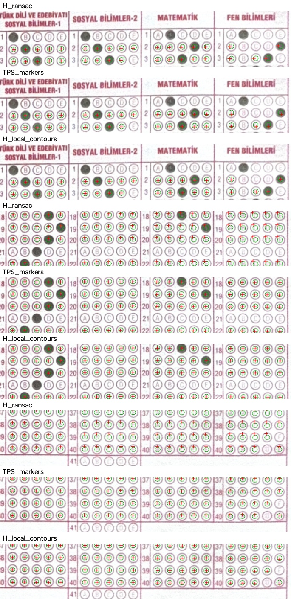
flat_angled_008
9 marker, 8 inlier. Hücreler: medyan / %95 hata px (değerlendirilen balon sayısı).
| Yöntem | turkce | sosyal | matematik | fen |
|---|
| H_all | 2.10 / 4.51 (160) | 3.21 / 5.52 (178) | 3.97 / 5.43 (160) | 4.96 / 5.99 (160) |
| H_ransac | 3.60 / 8.24 (160) | 4.27 / 8.55 (178) | 4.08 / 7.26 (160) | 4.25 / 6.00 (160) |
| TPS_markers | 0.81 / 1.60 (160) | 1.54 / 2.44 (178) | 2.95 / 4.08 (160) | 4.93 / 6.46 (160) |
| H_TPS_all | 1.36 / 2.72 (160) | 2.29 / 4.25 (178) | 3.40 / 4.96 (160) | 4.72 / 5.94 (160) |
| H_TPS_inliers | 2.11 / 7.17 (160) | 2.97 / 7.82 (178) | 3.02 / 6.57 (160) | 3.55 / 5.68 (160) |
| H_local_contours | 0.30 / 0.72 (160) | 0.28 / 0.53 (178) | 0.32 / 0.76 (160) | 0.43 / 0.87 (160) |
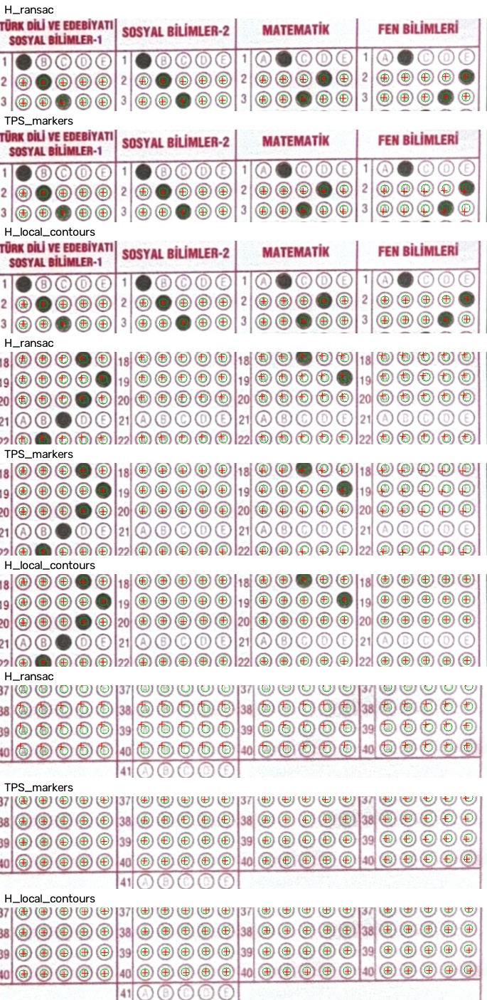
flat_angled_009
10 marker, 9 inlier. Hücreler: medyan / %95 hata px (değerlendirilen balon sayısı).
| Yöntem | turkce | sosyal | matematik | fen |
|---|
| H_all | 1.60 / 2.45 (158) | 1.78 / 2.79 (145) | 1.94 / 2.92 (136) | 1.52 / 2.85 (82) |
| H_ransac | 1.59 / 2.21 (158) | 1.67 / 2.43 (145) | 1.57 / 2.33 (136) | 1.14 / 3.11 (82) |
| TPS_markers | 1.55 / 3.34 (158) | 1.50 / 2.77 (145) | 1.08 / 2.12 (136) | 1.92 / 3.84 (82) |
| H_TPS_all | 1.33 / 3.14 (158) | 1.70 / 2.96 (145) | 1.55 / 2.77 (136) | 1.28 / 2.45 (82) |
| H_TPS_inliers | 1.46 / 3.15 (158) | 1.83 / 3.03 (145) | 1.79 / 2.86 (136) | 1.35 / 2.52 (82) |
| H_local_contours | 0.30 / 0.73 (158) | 0.29 / 0.63 (145) | 0.31 / 0.62 (136) | 0.51 / 0.92 (82) |
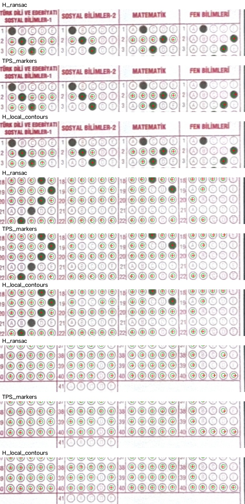
flat_angled_010
10 marker, 10 inlier. Hücreler: medyan / %95 hata px (değerlendirilen balon sayısı).
| Yöntem | turkce | sosyal | matematik | fen |
|---|
| H_all | 0.74 / 1.56 (160) | 0.81 / 1.65 (176) | 0.91 / 1.68 (160) | 0.88 / 2.30 (157) |
| H_ransac | 0.74 / 1.56 (160) | 0.81 / 1.65 (176) | 0.91 / 1.68 (160) | 0.88 / 2.30 (157) |
| TPS_markers | 0.88 / 1.53 (160) | 1.44 / 1.86 (176) | 1.92 / 2.64 (160) | 2.45 / 3.26 (157) |
| H_TPS_all | 0.90 / 1.58 (160) | 1.23 / 1.73 (176) | 1.33 / 1.75 (160) | 0.98 / 1.99 (157) |
| H_TPS_inliers | 0.90 / 1.58 (160) | 1.23 / 1.73 (176) | 1.33 / 1.75 (160) | 0.98 / 1.99 (157) |
| H_local_contours | 0.27 / 0.59 (160) | 0.28 / 0.57 (176) | 0.28 / 0.47 (160) | 0.30 / 0.73 (157) |
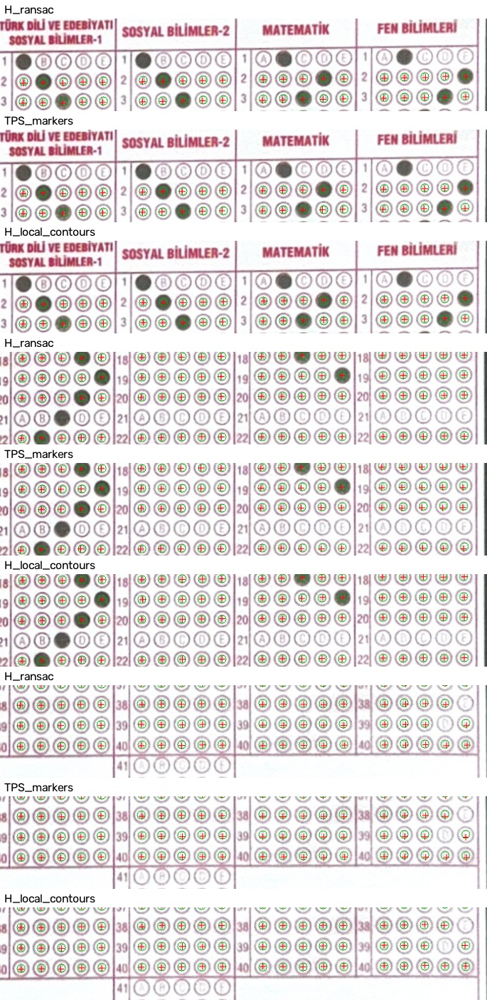
flat_front_001
10 marker, 10 inlier. Hücreler: medyan / %95 hata px (değerlendirilen balon sayısı).
| Yöntem | turkce | sosyal | matematik | fen |
|---|
| H_all | 0.82 / 2.12 (160) | 1.40 / 2.63 (178) | 1.96 / 3.17 (160) | 2.17 / 3.39 (160) |
| H_ransac | 0.82 / 2.12 (160) | 1.40 / 2.63 (178) | 1.96 / 3.17 (160) | 2.17 / 3.39 (160) |
| TPS_markers | 2.02 / 4.63 (160) | 3.71 / 5.99 (178) | 5.48 / 7.56 (160) | 7.30 / 8.90 (160) |
| H_TPS_all | 1.30 / 2.45 (160) | 2.12 / 3.32 (178) | 2.91 / 4.11 (160) | 3.17 / 4.37 (160) |
| H_TPS_inliers | 1.30 / 2.45 (160) | 2.12 / 3.32 (178) | 2.91 / 4.11 (160) | 3.17 / 4.37 (160) |
| H_local_contours | 0.25 / 0.54 (160) | 0.27 / 0.48 (178) | 0.28 / 0.53 (160) | 0.30 / 0.69 (160) |

flat_front_002
9 marker, 8 inlier. Hücreler: medyan / %95 hata px (değerlendirilen balon sayısı).
| Yöntem | turkce | sosyal | matematik | fen |
|---|
| H_all | 0.49 / 2.23 (160) | 1.44 / 3.05 (178) | 2.25 / 3.90 (160) | 2.98 / 4.31 (160) |
| H_ransac | 0.62 / 1.09 (160) | 0.70 / 1.53 (178) | 1.14 / 1.86 (160) | 1.84 / 4.73 (160) |
| TPS_markers | 1.50 / 3.89 (160) | 2.80 / 5.21 (178) | 4.79 / 6.80 (160) | 6.13 / 7.85 (160) |
| H_TPS_all | 1.17 / 2.49 (160) | 2.15 / 3.75 (178) | 3.22 / 4.85 (160) | 3.49 / 5.15 (160) |
| H_TPS_inliers | 0.96 / 1.61 (160) | 0.93 / 1.44 (178) | 0.77 / 1.29 (160) | 0.76 / 3.62 (160) |
| H_local_contours | 0.26 / 0.62 (160) | 0.26 / 0.48 (178) | 0.27 / 0.60 (160) | 0.29 / 0.69 (160) |
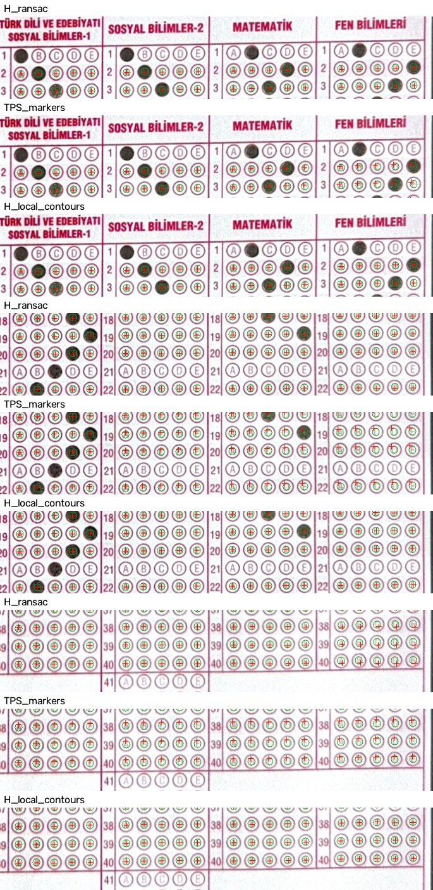
flat_front_003
10 marker, 10 inlier. Hücreler: medyan / %95 hata px (değerlendirilen balon sayısı).
| Yöntem | turkce | sosyal | matematik | fen |
|---|
| H_all | 0.56 / 1.08 (160) | 0.54 / 0.97 (178) | 0.63 / 1.01 (160) | 0.69 / 1.07 (160) |
| H_ransac | 0.56 / 1.08 (160) | 0.54 / 0.97 (178) | 0.63 / 1.01 (160) | 0.69 / 1.07 (160) |
| TPS_markers | 1.04 / 1.82 (160) | 1.44 / 2.16 (178) | 2.19 / 2.81 (160) | 3.09 / 3.79 (160) |
| H_TPS_all | 0.79 / 1.35 (160) | 1.01 / 1.58 (178) | 1.44 / 1.97 (160) | 1.67 / 2.13 (160) |
| H_TPS_inliers | 0.79 / 1.35 (160) | 1.01 / 1.58 (178) | 1.44 / 1.97 (160) | 1.67 / 2.13 (160) |
| H_local_contours | 0.26 / 0.52 (160) | 0.26 / 0.51 (178) | 0.26 / 0.50 (160) | 0.27 / 0.60 (160) |
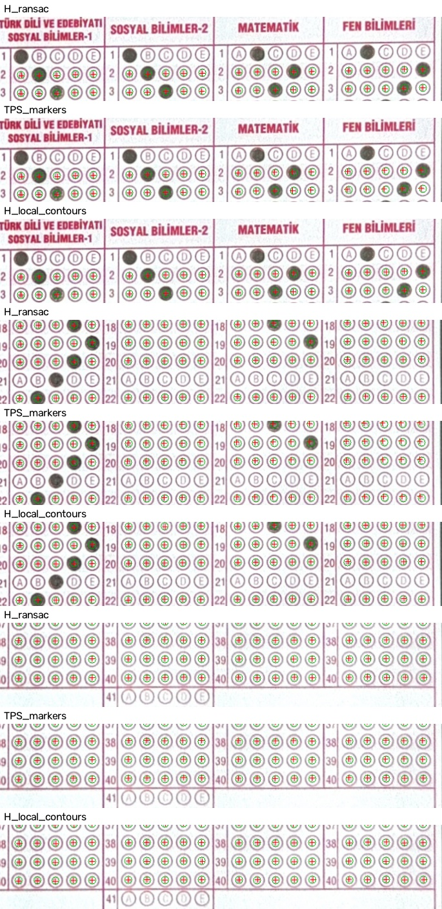
flat_front_005
9 marker, 8 inlier. Hücreler: medyan / %95 hata px (değerlendirilen balon sayısı).
| Yöntem | turkce | sosyal | matematik | fen |
|---|
| H_all | 0.55 / 0.94 (160) | 0.52 / 0.90 (178) | 0.32 / 0.71 (160) | 0.41 / 1.07 (160) |
| H_ransac | 0.54 / 1.15 (160) | 1.05 / 2.43 (178) | 1.79 / 3.73 (160) | 3.45 / 5.66 (160) |
| TPS_markers | 1.80 / 3.19 (160) | 2.14 / 3.62 (178) | 3.41 / 4.52 (160) | 4.95 / 6.08 (160) |
| H_TPS_all | 1.56 / 3.08 (160) | 1.71 / 2.75 (178) | 1.55 / 2.43 (160) | 0.97 / 1.54 (160) |
| H_TPS_inliers | 1.49 / 2.92 (160) | 1.93 / 2.53 (178) | 1.91 / 3.34 (160) | 2.24 / 4.87 (160) |
| H_local_contours | 0.26 / 0.51 (160) | 0.28 / 0.50 (178) | 0.27 / 0.50 (160) | 0.28 / 0.64 (160) |
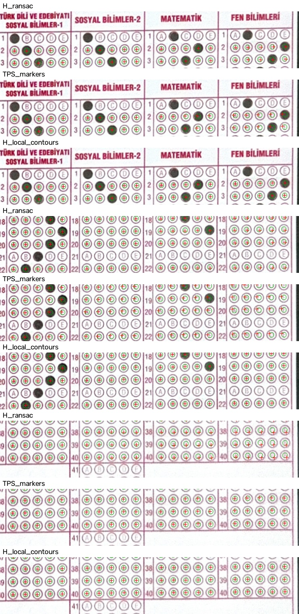
flat_front_006
10 marker, 9 inlier. Hücreler: medyan / %95 hata px (değerlendirilen balon sayısı).
| Yöntem | turkce | sosyal | matematik | fen |
|---|
| H_all | 0.69 / 1.07 (160) | 0.75 / 1.18 (178) | 0.90 / 1.38 (160) | 1.00 / 1.37 (160) |
| H_ransac | 0.54 / 1.08 (160) | 1.18 / 2.44 (178) | 1.71 / 3.24 (160) | 2.86 / 5.44 (160) |
| TPS_markers | 0.45 / 0.79 (160) | 0.55 / 1.09 (178) | 1.18 / 1.76 (160) | 1.96 / 2.49 (160) |
| H_TPS_all | 0.50 / 0.84 (160) | 0.70 / 1.10 (178) | 1.12 / 1.64 (160) | 1.24 / 1.71 (160) |
| H_TPS_inliers | 0.52 / 1.06 (160) | 0.81 / 2.29 (178) | 1.23 / 3.00 (160) | 2.25 / 5.16 (160) |
| H_local_contours | 0.23 / 0.49 (160) | 0.27 / 0.52 (178) | 0.27 / 0.50 (160) | 0.27 / 0.61 (160) |
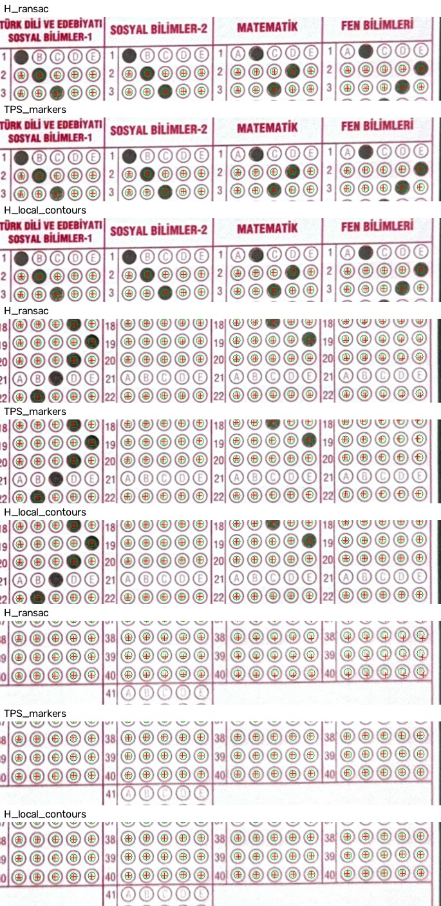
flat_front_007
10 marker, 10 inlier. Hücreler: medyan / %95 hata px (değerlendirilen balon sayısı).
| Yöntem | turkce | sosyal | matematik | fen |
|---|
| H_all | 0.45 / 0.83 (160) | 0.57 / 1.02 (177) | 0.68 / 1.05 (160) | 0.50 / 0.96 (160) |
| H_ransac | 0.45 / 0.83 (160) | 0.57 / 1.02 (177) | 0.68 / 1.05 (160) | 0.50 / 0.96 (160) |
| TPS_markers | 0.66 / 1.18 (160) | 0.99 / 1.60 (177) | 1.57 / 2.30 (160) | 2.36 / 3.22 (160) |
| H_TPS_all | 0.73 / 1.26 (160) | 0.94 / 1.45 (177) | 1.06 / 1.61 (160) | 0.84 / 1.44 (160) |
| H_TPS_inliers | 0.73 / 1.26 (160) | 0.94 / 1.45 (177) | 1.06 / 1.61 (160) | 0.84 / 1.44 (160) |
| H_local_contours | 0.25 / 0.58 (160) | 0.27 / 0.54 (177) | 0.27 / 0.50 (160) | 0.27 / 0.61 (160) |
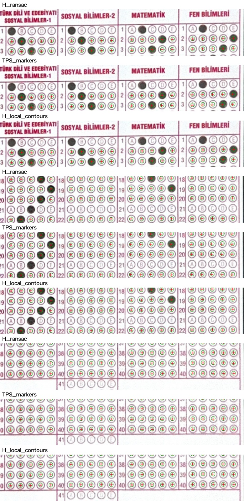
flat_front_008
10 marker, 10 inlier. Hücreler: medyan / %95 hata px (değerlendirilen balon sayısı).
| Yöntem | turkce | sosyal | matematik | fen |
|---|
| H_all | 0.79 / 1.34 (160) | 0.90 / 1.50 (178) | 1.00 / 1.50 (160) | 0.68 / 1.28 (160) |
| H_ransac | 0.71 / 1.21 (160) | 0.85 / 1.40 (178) | 0.97 / 1.45 (160) | 0.74 / 1.31 (160) |
| TPS_markers | 0.42 / 0.91 (160) | 0.51 / 1.24 (178) | 0.79 / 1.30 (160) | 0.82 / 1.29 (160) |
| H_TPS_all | 0.46 / 1.02 (160) | 0.63 / 1.20 (178) | 0.83 / 1.25 (160) | 0.67 / 1.10 (160) |
| H_TPS_inliers | 0.46 / 1.02 (160) | 0.63 / 1.20 (178) | 0.83 / 1.25 (160) | 0.67 / 1.10 (160) |
| H_local_contours | 0.26 / 0.55 (160) | 0.26 / 0.50 (178) | 0.27 / 0.51 (160) | 0.30 / 0.59 (160) |
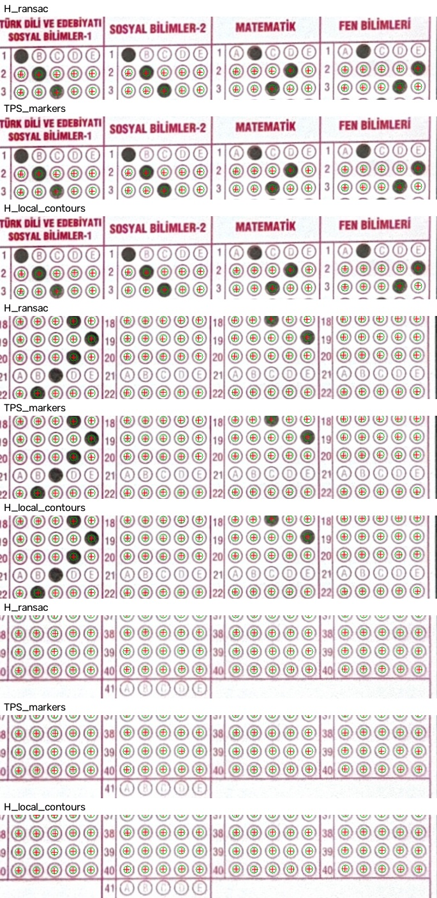
flat_front_009
10 marker, 10 inlier. Hücreler: medyan / %95 hata px (değerlendirilen balon sayısı).
| Yöntem | turkce | sosyal | matematik | fen |
|---|
| H_all | 1.24 / 1.76 (146) | 1.73 / 2.15 (70) | 1.61 / 2.06 (78) | 1.64 / 2.19 (32) |
| H_ransac | 1.24 / 1.76 (146) | 1.73 / 2.15 (70) | 1.61 / 2.06 (78) | 1.64 / 2.19 (32) |
| TPS_markers | 1.10 / 2.05 (146) | 1.78 / 2.69 (70) | 2.46 / 3.19 (78) | 3.70 / 5.02 (32) |
| H_TPS_all | 0.57 / 1.05 (146) | 0.91 / 1.33 (70) | 0.75 / 1.14 (78) | 0.60 / 1.56 (32) |
| H_TPS_inliers | 0.57 / 1.05 (146) | 0.91 / 1.33 (70) | 0.75 / 1.14 (78) | 0.60 / 1.56 (32) |
| H_local_contours | 0.28 / 0.58 (146) | 0.28 / 0.61 (70) | 0.27 / 0.60 (78) | 1.64 / 2.19 (32) |
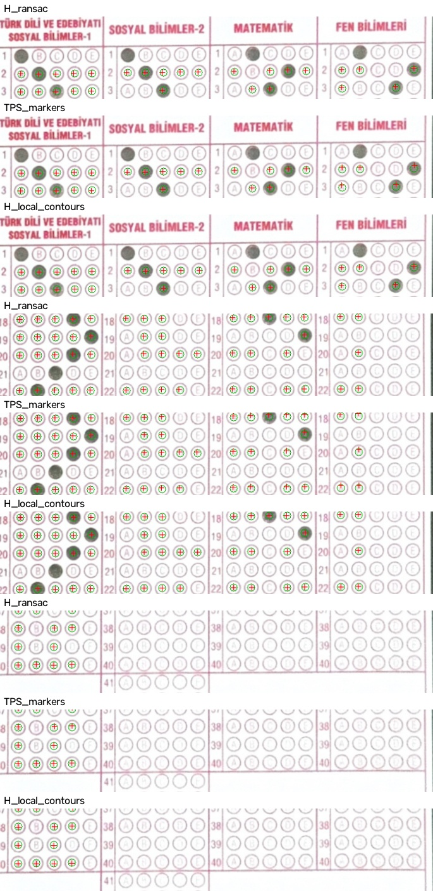
flat_front_010
10 marker, 10 inlier. Hücreler: medyan / %95 hata px (değerlendirilen balon sayısı).
| Yöntem | turkce | sosyal | matematik | fen |
|---|
| H_all | 0.51 / 1.08 (160) | 0.74 / 1.27 (178) | 0.90 / 1.48 (160) | 1.11 / 1.88 (160) |
| H_ransac | 0.51 / 1.08 (160) | 0.74 / 1.27 (178) | 0.90 / 1.48 (160) | 1.11 / 1.88 (160) |
| TPS_markers | 0.78 / 1.34 (160) | 0.76 / 1.30 (178) | 0.75 / 1.20 (160) | 0.68 / 1.16 (160) |
| H_TPS_all | 0.66 / 1.14 (160) | 0.67 / 1.10 (178) | 0.57 / 1.21 (160) | 0.54 / 1.63 (160) |
| H_TPS_inliers | 0.66 / 1.14 (160) | 0.67 / 1.10 (178) | 0.57 / 1.21 (160) | 0.54 / 1.63 (160) |
| H_local_contours | 0.25 / 0.54 (160) | 0.25 / 0.52 (178) | 0.27 / 0.55 (160) | 0.29 / 0.63 (160) |
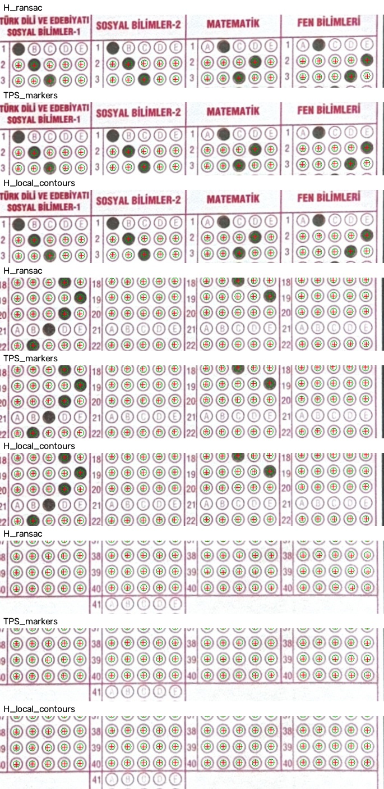